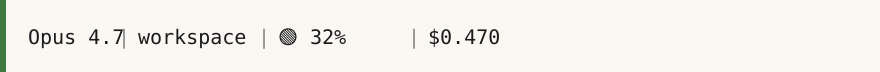

A field guide — est. 2026 · © 2026 Fahad Noor
Stop hitting the 200k wall.
A field guide to running heavy Claude Code sessions without losing context — or your sanity.
Pre-launch. One launch email, no newsletter. Opens your email client.
The signal you don't have yet
A live status line for every Claude Code session.
Color-tiered context usage. No guessing when autocompact is about to swallow your work.

Demo of the three states. The underlying data —
context_window.used_percentage — is read from the Claude Code
statusLine stdin schema (verified by grepping the installed binary, not the docs).
What the playbook covers
Four moves, each grounded in something specific.
-
I.
A context audit you can run in under two minutes.
Walk every component that eats tokens — messages, MCP connectors, skills, agents, hooks, system prompt — and learn which two typically hide the most bloat.
-
II.
Where MCP sprawl actually lives.
If your local
settings.jsonlooks clean but you're still loading 60k+ tokens before typing, the culprit is browser-side. The playbook names the exact setting and where to click. -
III.
A response protocol enforced by a Stop-hook.
Five mandatory sections per response — including a "harshest critic" block and tagged next-move paths. The playbook gives the template, the hook script, and the reason each section exists.
-
IV.
Verify the binary, not the docs.
A sixty-second grep pattern on any installed CLI (Claude Code, gh, pip packages). The playbook walks a real example: finding
context_window.used_percentageincli.js— a field the public docs don't mention.
Written for
- Claude users willing to take it to the next level
- People who have watched a long session run out of room
- Anyone who has watched autocompact silently drop the thing they were building
Where this actually is
Pre-launch. Here's what exists today.
- ✓ The statusline itself — shipped, reading real
context_windowfields from the bundled CLI. - ✓ The response-protocol Stop-hook — running on every session on my personal setup.
- ✓ The audit methodology — used on my own work, not yet written down.
- — The written playbook — in draft, not yet a deliverable PDF.
- — Pricing, marketplace listing, launch date — all TBD.
If you sign up, you'll get exactly one email — on the day there's something real to hand over. Not a newsletter, not a drip campaign.